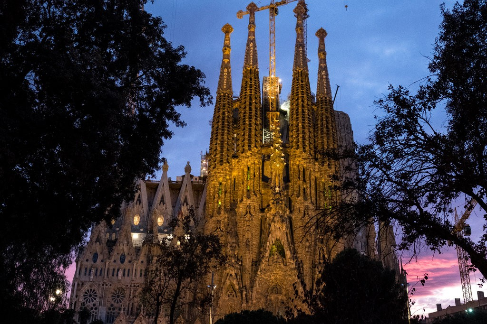
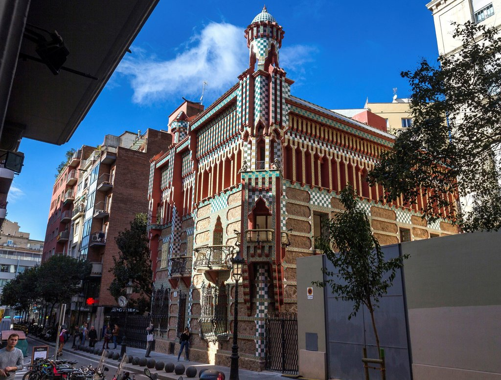
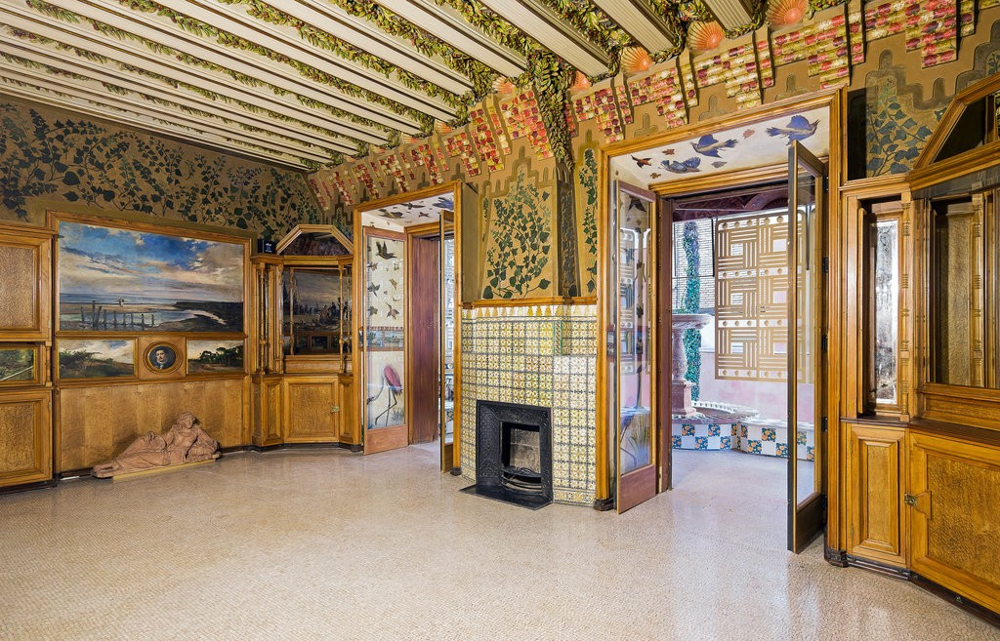

Unknown Leonardo da Vinci
They called him «fat boy», this seventeen-year old apprentice in the studio of Florentine painter
Verrocchio who would receive care packages from his step-father, a pastry chef. The bastard son of a Florentine notary and a lady of Vinci, the boy’s doting step-father gave him a taste for marzipans and sugars from a very young age.
After three years as an apprentice, twenty-year old Leonardo took a job as a cook at the Tavern of the Three Snails near the Ponte Vecchio, working during the day on the few commissions his master sent his way and slinging polenta in the evenings. Polenta was the restaurant’s signature dish, a tasteless hash of meats and corn porridge. When in the spring of 1473, a poisoning sickened and killed the majority of the cooking staff of the tavern, Leonardo was put in charge of the kitchen. He changed the menu completely, serving up delicate portions of carved polenta arranged beautifully on the plate. However, like most tavern clientele, the patrons preferred their meals in huge messy portions. Upset with the change in management, they ran Leonardo out of a job.
He wrote a humble letter to Ludovico Sforza, the future Duke of Milan, by way of a job application:
«My painting and my sculpture will stand comparison with that of any other artist. I am supreme at telling riddles and tying knots. And I make cakes that are without compare.»
Sforza took him on neither as a cook, painter, or sculptor, but instead as a lute player and after-dinner entertainer. Leonardo attempted to show his lord his new inventions for fortifications, catapults, and ladders, but Sforza paid little attention until the lute-player fashioned his inventions out of marzipan and jelly. Sforza charged the young man with refurbishing his kitchen, a task which would consume the life of Leonardo and the entire Sforza court.
Five hundred years before modern cooking books, The Kitchen Notebooks of Leonardo da Vinci envisioned a culinary world as studio and laboratory, where food was to be prepared efficiently, beautifully, and ingeniously. Unfortunately, Italian food of the late fifteenth century had less to do with the luxurious feats of Ancient Rome and more to do with the rustic tastes of the Goths, whose dishes included meats and birds for those who could afford it, and an endless parade of porridge and gruel for those who could not. Leonardo was horrified by much of the food that was served to him, both at court and at home, and he included in his notebooks a running list of dishes that he hated, but that his own servant insisted on serving him: jellied goat, hemp bread, inedible turnips, and eel balls — which he notes:
«this dish if eaten often can cause madness.»
Leonardo believed that every kitchen task could be mechanized—crushing garlic, pulling spaghetti, plucking ducks—but the machines Leonardo imagined were sometimes far more elaborate than the task required. His invention for a giant whisk twice the size of a man involved an operator from within who was constantly in danger of being wisked into the sauce. Another model involved a team of three horses engaged in the task of crushing a nut. One machine was intended to be operated by bees.
Leonardo was also a master of dining etiquette. Bad behavior at table was common among the courtiers. So Leonardo had to remind them that a courtier:
- He should not place his head upon his plate to eat.
- Neither should he sit beneath the table for any length of time.
- He should not place unpleasing or half-chewed pieces of his own food upon his neighbor’s plate without first asking him.
- He should not wipe his knife upon his neighbor’s clothing.
- Nor use his knife to carve upon the table.
- He should not set loose birds upon the table.
- Not snakes nor beetles...
- And if he is to vomit then he leaves the table.
- Likewise if he is to urinate.
Leonardo’s notebooks also humorously reveal the hidden violence of the Sforza court. He included instructions for hiring a new taster after Sforza’s dies from a poisoning («the old taster has done his job too well»). What Leonardo didn’t know at the time was that Sforza had his man killed in order to install an actual poisoner, hired to slowly kill his elder brother and assume the Dukedom. The possibility of an actual assassination was a real concern at the Sforza court, and Leonardo explained that there should be a refined protocol to the affair:
«If there is an assassination planned for the meal, then it is seemliest that the assassin should be seated next to he who is to become the subject of his craft... as this will cause less interruption to the conversation if the action of the event is confined to one small area... After the corpse (and bloodstains if any) are removed by the serving persons, it is customary for the assassin also to withdraw from the table as this presence may sometimes be disturbing to the digestions of the persons who now find themselves seated next to him, and to this end a good host will always have a fresh guest, who has waited without, ready to join the table at this juncture.»
Sagrada Familia, a Barcelona Masterpiece, and Scofflaw?
The Sagrada Familia basilica in Barcelona has worldwide fame as an architectural treasure, the dreamlike masterpiece of the Catalan architect Antoni Gaudí, which draws millions of visitors a year though it is still under construction, 136 years after work began.
What it has not had for more than a century, according to the city, is a valid building permit.
The Sagrada Familia basilica has agreed to pay city authorities 36 million euros, or about $41 million, over 10 years to settle the dispute over the legality of the work and help pay for transportation improvements around the basilica.
Using the permit as leverage, the administration of Barcelona ’s far-left mayor, Ada Colau, took on the Sagrada Familia, part of a trend of civil authorities around the country challenging the legal and tax status of Roman Catholic Church properties. Ms. Colau hailed the agreement, announced on Thursday, as historic.
The Sagrada Familia’s board had denied any wrongdoing, saying that it had a building permit — one issued in 1885 by Sant Martí de Provençals, which was an independent town at the time. Barcelona officials contend that after Sant Martí was absorbed into the city several years later, the construction required a Barcelona permit; the board says that for more than a century, no one asked for any such thing.
Work began in 1882 on the Sagrada Familia, whose radical design, incorporating elements of Gothic revival, Art Nouveau, modernism and Asian art, has been compared to everything from a Dr. Seuss drawing to an underwater forest of kelp and coral.
Gaudí died after being hit by a tram in 1926, with the project only about one-quarter complete, and for decades after his death, progress was slow, sporadic and often intensely debated. But the pace of work picked up in recent years. The Sagrada Familia is over two-thirds completed, and planners hope to finish it in 2026, in time for the centenary of Gaudí’s death.
Critics contend that the Sagrada Familia has drifted too far from the vision of Gaudí — some of his plans were destroyed long ago — or that it has more appeal as one of the world’s greatest unfinished monuments.
Even incomplete and surrounded by scaffolding and building cranes, Sagrada Familia is Barcelona’s most famous monument, visited by over 10,000 people a day and pictured on countless postcards and calendars. In November 2010, Pope Benedict XVI consecrated the church as a basilica and held Mass there before 7,000 people.
Ms. Colau and her administration accused the basilica’s board of working without a building permit, failing to submit required plans to tear down existing residential structures to finish the Sagrada Familia’s esplanade, and failing to pay construction taxes.
The city’s complaints struck a nerve in a country where, over several decades, the church had quietly registered thousands of properties, including the famed cathedral-mosque Córdoba, as tax-exempt, leading to claims of tax evasion and a debate over how the church spends tourism revenue.
After a Socialist prime minister, Pedro Sánchez, took power in June, his government announced that it would publish an inventory of all property claimed by the Catholic Church, opening the door to potential challenges to that ownership.
Ms. Colau faced pressure to resolve the conflict over the Sagrada Familia ahead of what is expected to be an uphill campaign for re-election next spring.
Under the deal struck this week, city authorities will go ahead with transportation infrastructure work around Sagrada Familia, including a feasibility study to build a passageway linking the basilica directly to the closest subway station. The agreement did not settle the dispute over the planned seizure of nearby homes.
But the basilica will, at last, have a building permit.
Gaudí’s First Completed House Opens to the Public
 Antoni Gaudi’s Casa Vicens in Barcelona, Spain. It was his first completed building, and is the last of seven Unesco-designated Gaudí treasures in the city to open to the public.The first house designed by Antoni Gaudí opened to the public on Thursday in Barcelona, Spain, after a major restoration.
Casa Vicens, in the city’s Gràcia district, was the first house designed and built by the Spanish architect, who is best known for the eccentric Sagrada Família basilica in the city’s center. It was commissioned in 1883 by Manel Vicens i Montaner, a stockbroker, to be his family’s summer house.
Located in the same district of Barcelona as the architect’s famous Güell Park, the four-story building’s ornate brickwork and colorful tiles bear the hallmarks of Gaudí’s distinctive style, which fuses Moorish influences with art nouveau. The house is also widely considered to be an early example of Modernisme, or Catalan modernism.
 The interior of Casa Vicens has been restored to its original state based on archival researchThe house was a family home until 2014, when it was bought by the Andorran financial institution MoraBanc, which made plans to open it to the public.